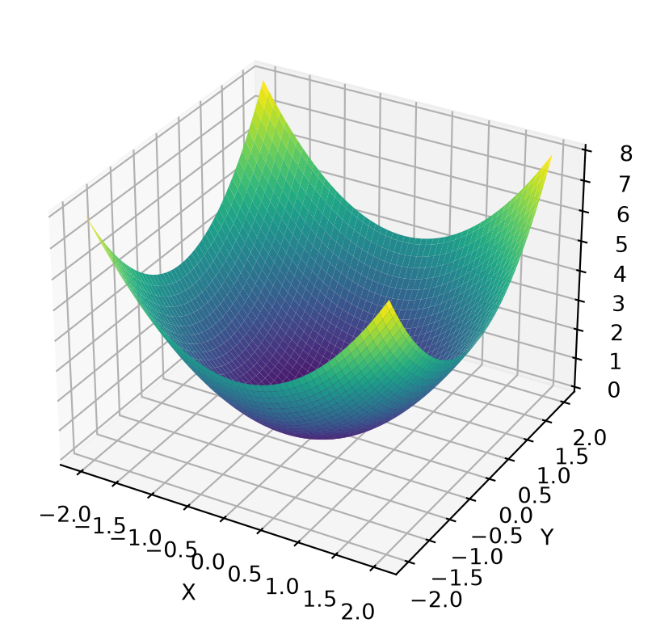

Như ta đã tiếp xúc với hàm đơn biến từ trước, ví dụ như f(x) = x^2 hay f(x) = -x + 2. Thì trong không gian 3 chiều, hay tổng quát hơn là n chiều, chúng ta cũng có thể biểu diễn nó bằng n - 1 biến.
Ví dụ: Hàm f(x, y) = x^2 + y^2
Code
import numpy as npimport matplotlib.pyplot as pltx = np.linspace(-2, 2, 100)y = np.linspace(-2, 2, 100)X, Y = np.meshgrid(x, y)Z = Y**2+ X**2fig = plt.figure(figsize=(6, 5))ax = fig.add_subplot(111, projection='3d')surf = ax.plot_surface(X, Y, Z, cmap='viridis', edgecolor='none')ax.set_xlabel('X')ax.set_ylabel('Y')ax.set_zlabel('Z')plt.show()

Contour plot
Việc biểu diễn hình không gian 3 chiều trong mặt phẳng thật sự là rất khó nếu ta vẽ như trên, để giải quyết vấn đề đó, chúng ta đã có Contour plot.
Đây chính là một kỹ thuật biểu diễn không gian 3 chiều trên mặt phẳng 2 chiều, khá là quen thuộc trong việc biểu diễn nhiệt độ vùng, độ cao của núi, … trong đó x và y là kinh độ và vỹ độ.
Hãy xem ví dụ về Topographic map của đỉnh Himalaya dưới đây:
Ta có thể thấy các vành xung quanh đó, mỗi điểm trên vành sẽ có giá trị bằng chính xác một giá trị nào đó, giá trị của điểm giữa hai vành sẽ có giá trị ở giữa giá trị hai vành. Các vành không thể cắt nhau. Nếu một điểm nào đó mà các vành xếp gần nhau, chứng tỏ ở đó là vách núi, và ngược lại, nếu chúng xếp xa nhau, thì chứng tỏ đó là đồng bằng.
Partial derivatives
Để khảo sát hàm tăng hay giảm trong hàm đơn biến, ta sử dụng đạo hàm, vậy thì làm sao để khảo sát nó trong hàm đa biến tại một mặt phẳng cố định? Đó là sử dụng đạo hàm riêng.
Đạo hàm riêng khá là dễ hiểu, căn bản là coi một biến là hằng số, còn biến còn lại là biến, rồi đạo hàm như bình thường.
\Rightarrow
\begin{cases}
\left( \sum_{i = 1}^{n}{(x_i^2)} \right) \cdot a + \left( \sum_{i = 1}^{n}{x_i} \right) \cdot b = \sum_{i = 1}^{n}{(x_iy_i)} \\
\left( \sum_{i = 1}^{n}{(x_i)} \right) \cdot a + n \cdot b = \sum_{i = 1}^{n}{(y_i)}
\end{cases}
\Rightarrow
\begin{bmatrix}
\sum x^2 & \sum x \\
\sum x & n
\end{bmatrix}
\begin{bmatrix}
a \\ b
\end{bmatrix}
=
\begin{bmatrix}
\sum xy \\
\sum y
\end{bmatrix}
In conclusion:
\begin{bmatrix}
a \\ b
\end{bmatrix}
=
\begin{bmatrix}
\sum x^2 & \sum x \\
\sum x & n
\end{bmatrix}^{-1}
\begin{bmatrix}
\sum xy \\
\sum y
\end{bmatrix}
Second derivative test
Như đã nói ở trước, Second derivative có thể giúp xác định xem đó là suy biến, cực đại, cực tiểu, hay là điểm saddle (yên ngựa).
w = a\left(x^2 + \frac b a xy\right) + cy^2
w = a\left(x + \frac b {2a} y\right)^2 + \left(c - \frac {b^2}{4a}\right)y^2
w = \frac 1 {4a} \left[ 4a^2 \left( x + \frac b {2a}y \right)^2 + (4ac - b^2)y^2 \right]
Let A = f_{xx}, B = f_{xy} and C = f_{yy}, we have 3 cases:
AC - B^2 < 0 \Rightarrow saddle point.
AC - B^2 = 0 \Rightarrow cant conclude
AC - B^2 > 0
\rightarrow if A > 0 local minimum.
\rightarrow if A < 0 local maximum.
Differentials, Chain rule
Total differential
Đạo hàm toàn phần: Cho một hàm f ví dụ như phụ thuộc vào 3 biến số f = f(x, y, z) thì đạo hàm toàn phần của nó là:
\mathbf df = f_x \mathbf d x + f_y \mathbf d y + f_z \mathbf d z
Quy tắc nhân, ta có f = f(u, v) = uv, đạo hàm toàn phần nó:
\mathbf d f = v \mathbf d u + u \mathbf dv \space (=vu'+uv')
Quy tắc thương, ta có f = f(u, v) = \frac u v, đạo hàm toàn phần:
\mathbf d f = \frac 1 v \mathbf du - \frac u {v^2} \mathbf d v = \frac {v\mathbf du - u\mathbf dv}{v^2}
\space \left(=\frac{vu' - uv'}{v^2}\right)
Application
Nói một cách khó hiểu, \mathbf d x hay bất kể \mathbf d gì đó, nó là một vật thể mang tính trừu tượng nhiều hơn việc định nghĩa nó là độ lệch của biến x. Hay có thể nói là \mathbf d x \neq \Delta x. Chỉ khi nào \Delta x tiến tới 0, thì khi đó \mathbf d x \approx \Delta x
Vậy đạo hàm toàn phần có thể làm những gì:
Nó biểu thị xem việc thay đổi các biến của f tác động thế nào đến f.
Nó là “người giữ chỗ” cho công thức xấp xỉ: \Delta f \approx f_x \Delta x + f_y \Delta y + f_z \Delta z.
Nếu các biến của f phụ thuộc vào tham số khác, ví dụ như x = x(t), y = y(t), z = z(t), thì ta có thể chia nó cho \mathbf d t để khảo sát xem việc thay đổi t tác động thế nào đến tốc độ thay đổi của hàm f theo t. Hàm trở thành \frac {\mathbf d f}{\mathbf d t} = \frac{\partial f}{\partial x}\frac {\mathbf d x}{\mathbf d t} + \frac{\partial f}{\partial y}\frac {\mathbf d y}{\mathbf d t} + \frac{\partial f}{\partial z}\frac {\mathbf d z}{\mathbf d t}
NoteExample
Ví dụ như, f = f(x, y, z) = x^2y + z, và x = t, y = e^t, z = \sin t 1. Ta đạo hàm như bình thường:
f = t^2 e^t + \sin t
\Rightarrow \frac {\mathbf df}{\mathbf dt} = e^t 2t + e^t t^2 + \cos t
Đạo hàm sử dụng Chain rule:
\frac{\partial f}{\partial x} = 2xy = 2te^t;
\frac{\partial f}{\partial y} = x^2 = t^2;
\frac{\partial f}{\partial z} = 1
\mathbf d x = 1;
\mathbf d y = e^t;
\mathbf d z = \cos t
vậy đáp án cuối cùng là:
\frac{\mathbf d f}{\mathbf dt} =
\frac{\partial f}{\partial x}\frac{\mathbf d x}{\mathbf dt} +
\frac{\partial f}{\partial y}\frac{\mathbf d y}{\mathbf dt} +
\frac{\partial f}{\partial z}\frac{\mathbf d z}{\mathbf dt} =
2te^t + e^t t^2 + \cos t
NoteJustify
Gradient
Cho f = f(x, y, z) với x = x(t), y = y(t), z = z(t), chainrule: